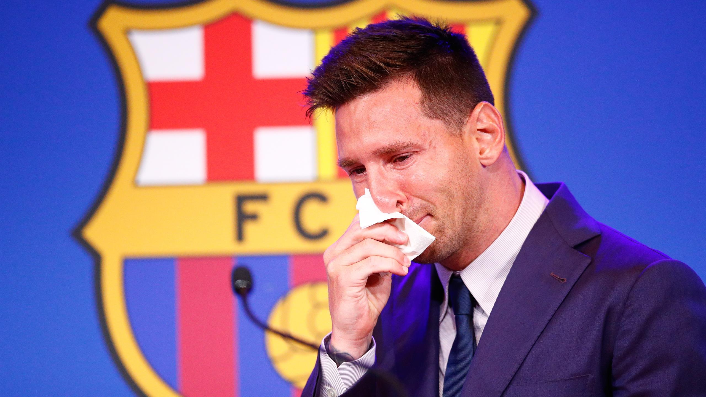

O‘zbekiston MTJning yangi bosh murabbiyi Toshkentga qachon kelishi
ma’lum bo‘ldi
Xabaringiz bor, futbol bo‘yicha O‘zbekiston milliy terma jamoasiga
sloveniyalik mutaxassis Srechko Katanets bosh murabbiy bo‘lish
arafasida. Turizm va sport vazirligi MTJga bir qator xorijiy va
mahalliy murabbiylar nomzodi sinchkovlik bilan o‘rganib chiqilganini
ma’lum qildi. Murabbiylar kengashi hamda mutaxassislarning tahlili va
tavsiyasiga ko‘ra yakunda O‘zbekiston milliy terma jamoasi bosh
murabbiyligiga sloveniyalik tajribali mutaxassis Srechko Katanets
nomzodi ma’qul, deb topilgan. O‘FA hozirga qadar sloveniyalik murabbiy
bilan og‘zaki kelishuvga erishgan va kelayotgan haftada, aniqrog‘i
joriy yilning 18 avgust kunida Srechko Katanets o‘zaro muzokaralarning
yakuniy bosqichini o‘tkazish uchun Toshkentga tashrif buyurishi
kutilmoqda. Demak, 4 kundan keyin barchasiga oydinlik kiritiladi.
Eslatib o‘tamiz, O‘zbekiston milliy terma jamoasiga bundan oldin Vadim
Abramov bosh murabbiylik qilgandi. Abramov JCH-2022 saralash
bosqichidagi muvaffaqiyatsiz harakati sabab iste’foga chiqarilgandi.
Messi ko‘z yoshini artgan “salfetka” million dollarga sotildi

Xabaringiz bor, argentinalik futbol yulduzi Lionel Messi
“Barselona”dan erkin agent maqomida Parijning PSJ klubi safiga borib
qo‘shilgan edi. Messining 18 yildan so‘ng Kataloniyani tark etishi
munosabati bilan 7 avgust kuni “Barselona” “Kamp Nou” stadionida
xayrlashuv matbuot anjumani tashkillashtirgan edi. Unda Messi so‘zga
chiqqanida ko‘z yoshlarini tiyib turolmagandi. “Marca” nashrining
xabariga ko‘ra, uning o‘sha matbuot anjumanida ko‘z yoshini artish
uchun ishlatgan quruq sochig‘i auksionda 1 million dollar evaziga
sotilgan. Boshlang‘ich narx 5 ming dollar etib belgilangan, biroq
muxlislarning o‘sha narsani sotib olishga bo‘lgan ishtiyoqi sababli
million dollargacha ko‘tarilgan. Ma’lumot uchun, ushbu narx o‘zbek
so‘mida 10 mlrd 671 million 50 ming so‘mga teng. Eslatib o‘tamiz, shu
kabi voqea “Manchester Yunayted” klubining afsonaviy bosh murabbiyi
Ser Aleks Fergyuson bilan ham bo‘lgan edi. O‘shanda Serning chaynagan
saqichi 456 ming yevro evaziga sotilgan edi.
Men hali ham “Arsenal” yo‘qolib ketmasligiga ishonaman — Gari Lineker
Kecha, 13 avgust kuni Angliya terma jamoasining sobiq hujumchisi Gari
Lineker Angliya Premer ligasi yangi mavsumining ochilish o‘yinida
“Arsenal” klubining musobaqa debyutanti “Brentford”dan uchralgan
mag‘lubiyatiga munosabat bildirdi. “Men hali ham “Arsenal” yo‘qolib
ketmasligiga ishonaman”, deya yozgan Lineker o‘z tvitter sahifasida.
Eslatib o‘tamiz, uchrashuv 2:0 hisobida “Brentford” foydasiga hal
bo‘ldi. “Arsenal” mavsum startini omadsiz boshladi va 45 yillik an’ana
o‘z yakuniga yetdi. Gap shundaki, “To‘pchilar” APL 1-turida so‘nggi
bor 1976-77 yilgi mavsumda “Bristol Siti”ga mag‘lub bo‘lgan. Ma’lumot
uchun, “Brentford” o‘tgan mavsum Chempionshipda (quyi liga) ishtirok
etgan va Premer Liga yo‘llanmasini qo‘lga kiritgan. “Arsenal” esa APL
turnir jadvalini 8-o‘rinda yakunlab, hatto Yevropa Ligasida ishtirok
etish huquqinidan ham mahrum bo‘ldi.